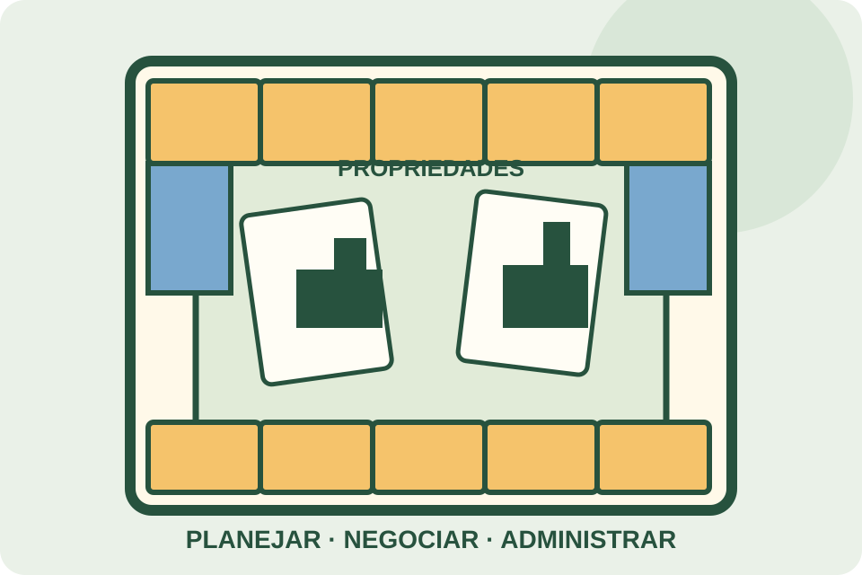

Banco Imobiliário
Negociação, propriedades e administração de recursos
Os participantes percorrem o tabuleiro, compram propriedades, pagam cobranças e negociam para administrar seu dinheiro e buscar a vitória.

O desafio
O que observar neste jogo
Banco Imobiliário é um jogo de tabuleiro de negociação e administração de recursos. Ao percorrer o tabuleiro, os participantes podem adquirir propriedades, receber pagamentos, arcar com despesas e tomar decisões que afetam sua situação financeira.
Há diferentes edições e versões, com variações em componentes, valores, regras de negociação e condições de encerramento. Esta ficha é um guia geral: o manual do exemplar deve ser a referência para preparar e conduzir a partida.
Guia de ação
Como experimentar
- 1
Prepare o jogo
Separe o tabuleiro, os peões, o dinheiro, as cartas e os marcadores de propriedade. Escolha quem será responsável pelo banco e distribua os recursos iniciais conforme o manual.
- 2
Percorra o tabuleiro
Na sua vez, role os dados e mova o peão conforme as regras. Resolva o espaço em que parar: ele pode permitir uma compra, exigir pagamento ou indicar uma ação especial.
- 3
Administre e negocie
Avalie compras, pagamentos e negociações permitidas pela edição. Acompanhe seu dinheiro e as obrigações, pois decisões vantajosas no curto prazo podem criar dificuldades mais adiante.
- 4
Aplique a condição de vitória
Continue até que ocorra a condição de encerramento prevista no manual. Em muitas versões, a falência dos adversários é central, mas a forma exata de finalizar e determinar o vencedor depende da edição.
Possibilidades educativas
O que a atividade pode mobilizar
Planejamento de recursos
Equilibrar dinheiro disponível, despesas futuras e oportunidades de compra.
Negociação
Apresentar propostas, avaliar trocas e considerar interesses diferentes.
Tomada de decisão sob incerteza
Lidar com resultados dos dados e adaptar planos às mudanças no tabuleiro.
“Pode mobilizar” não significa “desenvolve automaticamente”. A experiência depende da proposta, da repetição, do diálogo e das condições de participação.
Mediação
Perguntas que mantêm o problema aberto
- Quanto dinheiro precisa ser reservado para despesas futuras?
- Que vantagens e riscos existem em comprar esta propriedade agora?
- Como uma negociação pode beneficiar ou prejudicar cada participante?
Participação e acessibilidade
Formas de adaptar sem retirar o desafio
- Use bandejas ou divisórias para organizar dinheiro e cartas e reduzir a perda de componentes.
- Leia em voz alta os valores e as ações, se isso facilitar a participação de todos.
- Para partidas mais curtas, combine uma duração ou condição alternativa antes de começar, deixando claro que ela modifica as regras usuais.